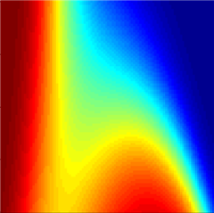

集成学习简介
Ensemble Learning

目录
- 引入
- 什么是集成学习
- 集成学习可视化
- 集成学习多种算法
- 应用实例
一个段子
福建一个女大学生很漂亮，被大家称作班花，一位开宝马的高富帅对她穷追不舍，令她苦恼不已。班上男生们知道后，每个人凑了180元，租了一辆保时捷，让一个男生当着高富帅的面开着豪车去接班花，高富帅果然“知难而退”。
孔多塞陪审团定理
- 孔多塞陪审团定理：在多人投票时，我们假设每个投票者之间是独立的，并且做出正确选择的概率为p。
- 如果p>1/2，那么随着投票人数的增加，最终作出正确选择的概率趋向于1。
不明觉厉的随机森林
——Random Forest
- 采用对样本重抽样与随机选择变量来训练许多决策树。
- 然后综合这些决策树的结果（投票或平均），得到一个最终的结果。
- 每一棵决策树是一个弱分类器，但是利用许许多多不同的弱分类器，就能得到一个强分类器。
集成学习
像随机森林这样，由弱分类器组合得到强分类器的机器学习模式，正是集成学习方法的生动体现。
同质 Vs 异质
- 随机森林组合的基分类器（base learner）是由同质的决策树构成，它们的学习模式一致。
- 进一步，异质的集成学习模式下的基分类器由不同质的基分类器构成（如线性分类器和非线性分类器等）
集成学习可视化
- 人为地构造一个数据集，通过两个变量来生成分类结果，而另外两个变量完全是噪音。
- 训练Logistic回归，随机森林与支持向量机三个模型。
- 将它们的结果取平均。
集成学习的多种算法
- bagging, boosting, random Forest……
- 平均，投票，加权，stacking……
- 一个简单的贪心算法
贪心算法
- 定义最优组合，初始时将得分值最大的模型加入组合（得分值按照评价准则定义）
- 逐步添加能使当前组合整体预测得分值提升最大的模型，直到不能有任何模型添加能提高当前组合的得分值或达到最大迭代步数